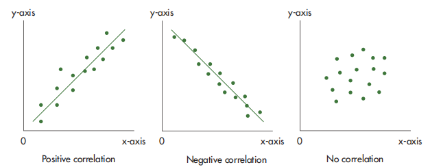
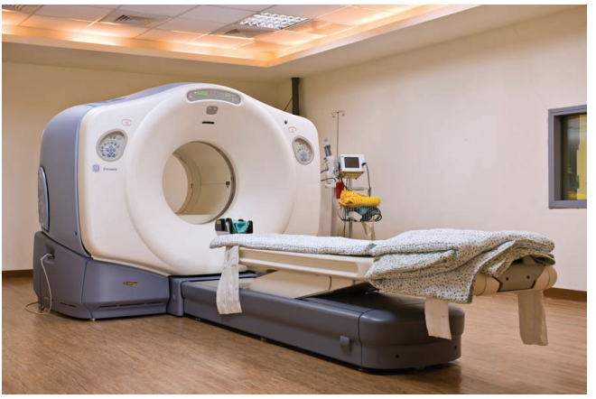
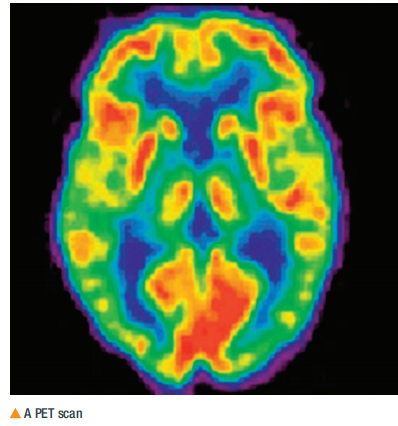
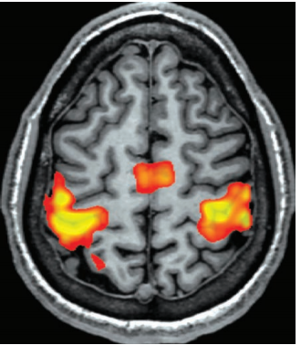
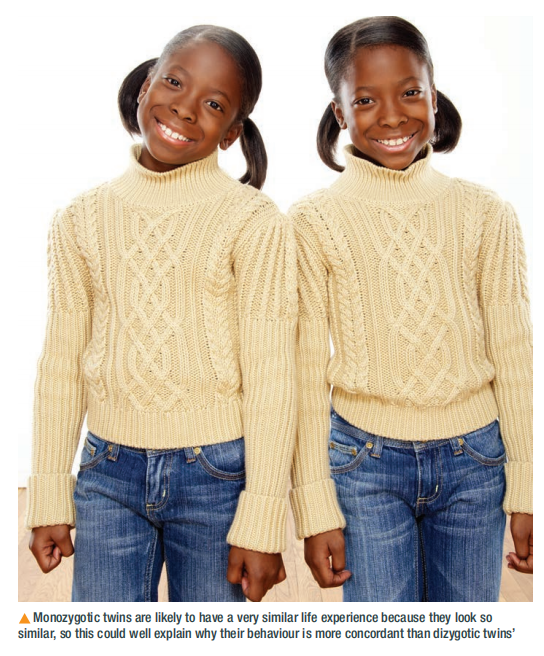

📚 Learning Objectives & Syllabus Mapping
⚡ Quick Summary
Chapter 17 sits in Unit 3: Applications of Psychology, but it is a methods chapter（方法章节）, not a theory chapter. You need to be able to calculate a Spearman’s rank correlation coefficient, read a scatter diagram, and evaluate correlations, brain-scanning techniques and twin studies. These topics are examined in Paper 3 (WPS03/01).
| Syllabus code | You must be able to… | Where in this chapter |
|---|---|---|
| 3.2.1 | Describe and evaluate correlational research, including co-variables（协变量）. | §2, §5 |
| 3.2.2 | Identify positive, negative and no correlation; use scatter diagrams（散点图）. | §3 |
| 3.2.3 | Understand issues with correlation: cause and effect, third variables（第三变量）. | §5 |
| 3.2.4 | Calculate and interpret the Spearman’s rank test（斯皮尔曼等级相关检验）. | §4 |
| 3.2.5 | Describe and evaluate CAT, PET and fMRI to investigate behaviour, including aggression. | §6 |
| 3.2.6 | Describe and evaluate the use of twin studies（双生子研究） to investigate genetic relatedness and aggression. | §7 |
| 3.2.7 | List A from Topic A — already covered in your methods course. | — |
🎯 Exam Key Points
- Paper 3 has a 4-mark Spearman calculation question almost every session. You must be able to complete the table and give
r_sto 2 decimal places. - The 2-mark "justify why Spearman" question always needs two reasons: ① a correlation was predicted, and ② the data are at least ordinal（ranked）.
- For scanning techniques, exam questions usually ask for one strength and one weakness, with research examples.
- Twin-study questions often test whether you understand concordance rates and the difference between MZ and DZ twins.
🔗 What is Correlational Research?（什么是相关研究？）
⚡ Quick Summary
Correlation looks for a relationship between two co-variables（两个协变量之间的关系）. It does not tell you that one variable caused the other to change.
Co-variables（协变量） are the two variables measured in a correlation. They are not IV and DV — there is no manipulation. For example:
- Variable A: number of hours of revision
- Variable B: mark achieved on a test
Experiment vs Correlation
| Experiment（实验） | Correlation（相关） | |
|---|---|---|
| Aim | Find a causal relationship | Find a relationship |
| Variables | Independent variable（IV）& Dependent variable（DV） | Two co-variables |
| Groups | Compares differences between groups | Looks for a link within one group |
| Cause? | Can claim causation | Cannot claim causation |
Directional hypotheses for correlations
A correlation uses an alternative hypothesis（备择假设）, not an experimental hypothesis, because there is no IV/DV.
- Directional / one-tailed（定向/单尾）: predicts a positive or negative correlation.
- Non-directional / two-tailed（非定向/双尾）: predicts a relationship, but does not say which direction.
- Null hypothesis（零假设）: predicts no relationship.
- Directional: There will be a positive correlation between hours of revision and test marks.
- Non-directional: There will be a relationship between hours of revision and test marks.
- Null: There will be no relationship between hours of revision and test marks.
Positive and negative correlation
| Type | What happens | Example |
|---|---|---|
| Positive correlation（正相关） | As one variable goes up, the other goes up. | More revision hours → higher test marks. |
| Negative correlation（负相关） | As one variable goes up, the other goes down. | More hours awake → lower reaction-time score. |
| No correlation（零相关） | No clear pattern. | Shoe size and aggression. |
🎯 Exam Key Point
When writing a hypothesis for a correlation, never use the words "IV" or "DV". Use co-variable 1 and co-variable 2, and say whether the correlation is positive, negative or just a relationship.
📊 Scatter Diagrams（散点图）
⚡ Quick Summary
A scatter diagram plots each participant’s two scores: one on the x-axis, one on the y-axis. The pattern of dots tells you the direction and strength of the correlation.

Figure 17.1 Three scatter diagrams: positive, negative and no correlation. 课本原图，考试要求你会读图。
How to read a scatter diagram
| Pattern | Direction | Strength |
|---|---|---|
| Dots slope upwards from left to right | Positive | How close dots are to an imaginary straight line: very close = strong; spread out = weak. |
| Dots slope downwards from left to right | Negative | Same rule: close to line = strong; scattered = weak. |
| Dots form a random cloud | No correlation | — |
|r| = 0.00 – 0.30→ weak / little or no correlation|r| = 0.30 – 0.70→ moderate correlation|r| = 0.70 – 1.00→ strong correlation|r| = 1.00→ perfect correlation（all dots on the line）
记住：看绝对值，不看正负号。+0.85 和 −0.85 都是 strong。
Levels of measurement
To draw a scatter diagram, the data must be at least ordinal（等级/顺序数据）. This means the scores can be put in rank order. If your data are nominal（ categories only）, you cannot use a correlation or a scatter diagram.
🎯 Exam Key Point
If a question asks you to "describe the relationship shown in the scatter diagram", say two things: ① direction（positive/negative/none） and ② strength（strong/moderate/weak）. One sentence is not enough for full marks.
🧮 Spearman’s Rank Test: Step-by-Step（斯皮尔曼等级相关：一步步算）
⚡ Quick Summary
Spearman’s rank correlation coefficient（r_s）tells us whether two ordinal variables are related and whether the result is likely to be significant. It only works for correlation data.
n(n² − 1)
r_s= Spearman’s rank correlation coefficient（结果）d= difference between the ranks for each pair of scores（同一行两个等级的差）Σd²= sum of all the squared differences（所有 d² 加起来的总和）n= number of pairs of scores（成对数据的数量，不是总人数的一半）
The textbook example: revision hours and test marks
Table 17.1 shows 10 students. We will rank the hours, rank the marks, find the difference, square it, and then put everything into the formula.
| Student | Hours | Rank of hours | Mark /20 | Rank of mark | d | d² |
|---|---|---|---|---|---|---|
| 1 | 4 | 4 | 14 | 5 | −1 | 1 |
| 2 | 2 | 7 | 11 | 7 | 0 | 0 |
| 3 | 1 | 9 | 8 | 8 | 1 | 1 |
| 4 | 3 | 6 | 7 | 9.5 | −3.5 | 12.25 |
| 5 | 4 | 4 | 17 | 3 | 1 | 1 |
| 6 | 5 | 2 | 20 | 1 | 1 | 1 |
| 7 | 1 | 9 | 7 | 9.5 | −0.5 | 0.25 |
| 8 | 1 | 9 | 12 | 6 | 3 | 9 |
| 9 | 6 | 1 | 18 | 2 | −1 | 1 |
| 10 | 4 | 4 | 15 | 4 | 0 | 0 |
| Total Σd² | 26.5 | |||||
Table 17.4 课本例题完整计算表。注意：3 名学生复习 4 小时（第 1、5、10 名）共享 rank 4；3 名学生复习 1 小时（第 3、7、8 名）共享 rank 9；第 4、7 名学生都考了 7 分，mark 共享 rank 9.5。
Step-by-step calculation
1Rank both columns separately. Highest score gets rank 1, next gets rank 2, and so on.
2Deal with tied ranks. If several scores are the same, give them the average of the ranks they would have taken. In this example: three students revised for 4 hours, so they share rank 4 (ranks 3, 4 and 5 averaged); three revised for 1 hour, so they share rank 9 (ranks 8, 9 and 10 averaged); two students scored 7/20, so they share rank 9.5 (ranks 9 and 10 averaged).
3Find d for each row. d = rank of co-variable 1 − rank of co-variable 2.
4Square every d to remove negative signs. d² 永远 ≥ 0。
5Add up all d² to get Σd². Here Σd² = 26.5.
6Put into the formula. n = 10.
10(100 − 1) = 1 − 159
990 = 1 − 0.161 = 0.839 ≈ 0.84
🎯 Exam Key Point
Always give r_s to two decimal places if the question asks. In this example, 0.839 rounds to 0.84, which suggests a strong positive correlation.
What if the result is negative?
The formula can give a negative number. A negative r_s means a negative correlation. When you compare it to the critical values table, ignore the sign — use the absolute value.
Checking for significance
After calculating r_s, compare it to a critical value（临界值） from the table. If your calculated value is equal to or larger than the critical value, the result is significant.
| n | p ≤ 0.05 one-tailed | p ≤ 0.05 two-tailed | p ≤ 0.01 one-tailed |
|---|---|---|---|
| 5 | 0.900 | 1.000 | 1.000 |
| 6 | 0.829 | 0.886 | 0.943 |
| 7 | 0.714 | 0.786 | 0.893 |
| 8 | 0.643 | 0.738 | 0.833 |
| 9 | 0.600 | 0.700 | 0.783 |
| 10 | 0.564 | 0.648 | 0.745 |
Table 17.5 课本 Spearman 临界值表（节选）。注意：calculated value ≥ critical value 才 significant。
Calculated
r_s = 0.84.For n = 10, two-tailed p ≤ 0.05 critical value = 0.648.
0.84 > 0.648, so the result is significant at p ≤ 0.05.
We accept the alternative hypothesis and reject the null hypothesis.
Common mistakes to avoid
| Mistake | Why it loses marks |
|---|---|
| Ranking both columns together | Each variable must be ranked separately. |
| Forgetting tied ranks | Tied scores share the average rank. |
| Using n as number of participants in each variable | n is the number of paired scores. |
| Saying the sign matters when checking significance | Compare absolute value to the table, then interpret the sign separately. |
| Concluding causation from a significant correlation | Significance only means the relationship is unlikely to be due to chance; it does not prove cause. |
🎯 Exam Key Point
When asked to "justify why Spearman’s rank was used", give two separate marks: ① the study is looking for a correlation/relationship between two co-variables, and ② the data are at least ordinal（ranked/scores can be put in order）.
⚖️ Evaluating Correlation as a Research Method（评价相关研究法）
⚡ Quick Summary
Correlation is useful when experiments would be unethical or expensive, but its biggest weakness is that it cannot establish causation.
✅ Strengths
- Ethical: You can study relationships that it would be unethical to manipulate, e.g. stress and aggression.
- Cost-effective: Can use secondary data to see if a relationship exists before spending money on a full experiment.
- Natural: Measures behaviour as it occurs in real life, so high ecological validity.
- Useful pilot: A significant correlation may justify a later experimental study.
❌ Weaknesses
- Causation problem: Cannot tell which variable caused which, or if either caused the other.
- Third variable: Another factor may cause both co-variables to change. 例如：高温天气可能同时增加压力和攻击性。
- Directionality problem: Stress → aggression, or aggression → stress?
- Coincidence: Some correlations are spurious（虚假的）, e.g. mozzarella cheese consumption and civil engineering doctorates.
Third-variable problem in detail
A study finds that stress is positively correlated with aggression. Three explanations are possible:
- Stress causes aggression.
- Aggression causes stress.
- A third variable（e.g. hot weather） causes both stress and aggression independently.
This is why a significant correlation must never be described as “proving” causation.
🎯 Exam Key Point
In evaluation questions, use the phrase “correlation does not imply causation” and then give a concrete example from the topic, such as stress/aggression or violent video games/brain activity.
🧠 Brain-Scanning Techniques（脑扫描技术）
⚡ Quick Summary
Brain-scanning techniques let researchers see the structure and function of the brain. CAT shows structure; PET and fMRI show activity（function）.
🖥️ CAT / CT scan

What it does: Uses X-rays from multiple angles to create a detailed still image of brain structure.
Best for: Detecting damage, tumours, structural abnormalities (e.g. damage to the prefrontal cortex linked to aggression).
Strengths: Quick; accurate structural detail; helps surgeons plan procedures.
Weaknesses: Uses radiation; not suitable for pregnant women; only shows structure, not function.
🌈 PET scan

What it does: Injects a radioactive tracer (FDG, a glucose-like substance). Active brain areas use more glucose and emit more gamma rays; the scanner detects these to show metabolic activity（新陈代谢活动）.
Best for: Showing which areas are over- or under-active (e.g. Raine et al. 1997 — abnormal activity in violent murderers).
Strengths: Shows brain function; colour-coded output makes interpretation easier.
Weaknesses: Invasive (radioactive injection); lower resolution; possible long-term risk from repeated scans.
🧲 fMRI scan

What it does: Uses a powerful magnet to detect changes in blood oxygenation. Active brain areas receive more oxygenated blood; the scanner compares activity during a task vs. a baseline.
Best for: Tracking real-time brain activity during tasks (e.g. Montag et al. 2011 — gamers showed less response to negative images).
Strengths: No radiation; non-invasive; better resolution and accuracy than PET.
Weaknesses: Noisy and claustrophobic; patients with pacemakers or metal implants cannot be scanned; hard to get a true baseline because the awake brain is always active.
CAT vs PET vs fMRI: summary table
| Technique | What it measures | Radiation? | Resolution | Example study |
|---|---|---|---|---|
| CAT/CT | Structure / anatomy | Yes (X-rays) | High for structure | Prefrontal cortex damage and aggression |
| PET | Metabolic activity (glucose use) | Yes (tracer) | Moderate | Raine et al. (1997) — murderers |
| fMRI | Blood oxygenation (BOLD signal) | No | High for function | Montag et al. (2011) — violent video gamers |
Evaluating brain-scanning research
✅ Strengths
- Objective images: Produce visual data that can be checked by other researchers, improving reliability.
- Precise localisation: Can pinpoint which brain areas are involved in aggression or other behaviours.
- Scientific credibility: Quantitative data; falsifiable hypotheses.
❌ Weaknesses
- Correlational: Brain scan studies usually compare groups or measure associations; they cannot prove that brain differences cause aggression.
- Directionality: Violent behaviour may change the brain, not the other way around.
- Artificial tasks: Laboratory tasks may lack ecological validity compared with real-life aggression.
- Ethical issues: Could lead to stigmatising labels such as “aggressive brain” and screening people for future violence.
🎯 Exam Key Point
In a “describe and evaluate one scanning technique” question, give one mechanism (e.g. X-rays / radioactive tracer / magnetic field + blood oxygenation), one strength and one weakness with a named research example.
👯 Twin Studies（双生子研究）
⚡ Quick Summary
Twin studies compare how often MZ and DZ twins share a behaviour. If MZ concordance is higher, genetics may be involved.

Figure 17.6 Monozygotic（同卵） twins share 100% of their genes, but they may also be treated more similarly than dizygotic twins — this is the equal-environments problem.
MZ vs DZ twins
| Type | Also called | Genetic overlap | How formed |
|---|---|---|---|
| MZ | Monozygotic / identical | 100% | One fertilised egg splits into two embryos. |
| DZ | Dizygotic / fraternal | ~50% | Two separate eggs are fertilised by two separate sperm. |
Concordance rate
Concordance rate（一致率） is the percentage of twin pairs where both twins show the behaviour being studied. Higher concordance in MZ than DZ suggests a genetic influence.
- Findings: MZ twins = 42% concordance; DZ twins = 9% concordance.
- Conclusion: Because MZ concordance was much higher, genetics may play a role in schizophrenia.
- Findings: For physical aggression, MZ concordance was higher than DZ → suggests genetic influence.
- For social aggression, MZ and DZ concordance were similar → suggests environmental influence.
Evaluation of twin studies
✅ Strengths
- Natural manipulation: MZ and DZ twins provide a natural comparison of genetic similarity.
- Consistent evidence: Many twin studies find higher MZ concordance for aggression-related traits.
- Quantifiable: Concordance rates are easy to compare.
❌ Weaknesses
- Equal environments assumption: MZ twins may be treated more similarly than DZ twins, so the higher concordance may be due to environment, not genes.
- Epigenetics: Genes can be switched on or off by experience, so 100% shared DNA does not mean identical outcomes.
- Sample size: Large samples of MZ and DZ twins are hard to find, limiting generalisability.
- Nature–nurture: Twin studies cannot fully separate nature from nurture because twins usually share environments.
🎯 Exam Key Point
If the exam asks you to interpret concordance data, remember: MZ > DZ → genetics may be involved; MZ ≈ DZ → environment may be more important. Always mention that this is a correlation, not proof of causation.
📝 Exam Practice（真题演练）
⚡ Quick Summary
This section contains a real Paper 3 Spearman question (Jan 2025) plus adapted questions from the textbook Exam Practice. Work through the calculation first, then check the answer.
Real Exam Question · January 2025 Paper 3, Q7 (8 marks)
Becky is a forensic psychologist interested in the relationship between Cognitive Behavioural Therapy (CBT) sessions and aggressive incidents in offenders. She recorded the number of CBT sessions attended over six months and the number of aggressive incidents over the same period.
| CBT sessions | Rank 1 | Aggressive incidents | Rank 2 | d | d² |
|---|---|---|---|---|---|
| 18 | 9 | 9 | 1 | 8 | 64 |
| 7 | 1 | 20 | 9 | −8 | 64 |
| 16 | 8 | 13 | 3 | 5 | 25 |
| 15 | 7 | 12 | 2 | 5 | 25 |
| 10 | 3 | 15 | 5 | −2 | 4 |
| 9 | 2 | 18 | 8 | −6 | 36 |
| 14 | 6 | 17 | 7 | −1 | 1 |
| 11 | 4 | 16 | 6 | −2 | 4 |
| 13 | 5 | 14 | 4 | 1 | 1 |
| Total Σd² | 224 | ||||
(a) Complete Table 2 and calculate Spearman’s rank correlation coefficient. Give your answer to two decimal places. (4)
(b) Justify why Becky used a Spearman’s rank correlation coefficient on her data. (2)
(c) Explain one improvement Becky could make to her investigation. (2)
Click to see full worked answer
(a) Calculation:
9(81 − 1) = 1 − 1344
720 = 1 − 1.8667 = −0.8667 ≈ −0.87
This is a strong negative correlation: offenders who attended more CBT sessions tended to be involved in fewer aggressive incidents.
(b) Justification:
- Becky predicted a relationship/correlation between two co-variables (CBT sessions and aggressive incidents), not a difference between groups. (1)
- The data are at least ordinal because the number of sessions and incidents can be ranked. (1)
(c) Improvement:
For example: Becky could observe the number of aggressive acts the offenders take part in, rather than asking them to self-report. This improves the credibility of her data because offenders may under-report their aggressive incidents to appear better. (AO2 + AO3)
Textbook Exam Practice Questions
1. Matilda correlated hours slept per night with calorie intake. She hypothesised that fewer hours slept = more calories consumed. She found r = −0.66 with n = 10.
- (a) What is meant by p < 0.05?
- (b) Using a critical-values table, is her result significant at p < 0.05?
- (c) Give two reasons for using Spearman’s rank test.
- (d) Explain one weakness of using a correlation for this study.
Click to see Matilda answer
- (a) p < 0.05 means there is less than 5% probability that the result happened by chance.
- (b) For n = 10, two-tailed p = 0.05 critical value = 0.648. |−0.66| = 0.66 > 0.648, so the result is significant.
- (c) Reason 1: looking for a correlation/relationship; Reason 2: data are ordinal/ranked.
- (d) Correlation does not show causation — a third variable (e.g. stress) could cause both poor sleep and high calorie intake.
2. Kenneth wanted to investigate the relationship between number of concussions from contact sport and anger level. Describe how he would conduct a correlation.
Click to see Kenneth answer
- Recruit a sample, e.g. male students at a local sports facility using opportunity sampling（机会抽样）.
- Measure co-variable 1: number of concussions (from self-report or medical records).
- Measure co-variable 2: anger level using a standardised anger questionnaire.
- Plot scores on a scatter diagram to look for a trend.
- Calculate a Spearman’s rank correlation coefficient to test significance.
🎯 Exam Key Point
For Spearman questions, method marks come from: correct ranks, correct d and d², correct Σd², correct formula substitution, correct final r_s. If your final answer is wrong, you can still get marks for showing the working.
🔑 Key Terms（术语表）
| Term | Plain-English definition | 中文 |
|---|---|---|
| Co-variables | The two variables measured in a correlation study. | 协变量 |
| Positive correlation | As one variable increases, the other increases. | 正相关 |
| Negative correlation | As one variable increases, the other decreases. | 负相关 |
| Scatter diagram | A graph plotting co-variables on x- and y-axes. | 散点图 |
| Spearman’s rank test | An inferential test for relationships between two ordinal variables. | 斯皮尔曼等级相关检验 |
| Correlation coefficient | A number between −1 and +1 showing strength and direction of a relationship. | 相关系数 |
| Critical value | The table value used to decide if a result is statistically significant. | 临界值 |
| p ≤ 0.05 | Less than 5% probability the result is due to chance. | 显著性水平 0.05 |
| CAT/CT scan | Uses X-rays to produce a structural image of the brain. | 计算机轴向断层扫描 |
| PET scan | Uses a radioactive tracer to measure metabolic activity. | 正电子发射断层扫描 |
| fMRI | Uses magnetic fields to detect blood-oxygen changes during brain activity. | 功能性磁共振成像 |
| Concordance rate | Percentage of twin pairs where both twins show the behaviour. | 一致率 |
| MZ twins | Monozygotic / identical; share 100% genes. | 同卵双胞胎 |
| DZ twins | Dizygotic / fraternal; share ~50% genes. | 异卵双胞胎 |